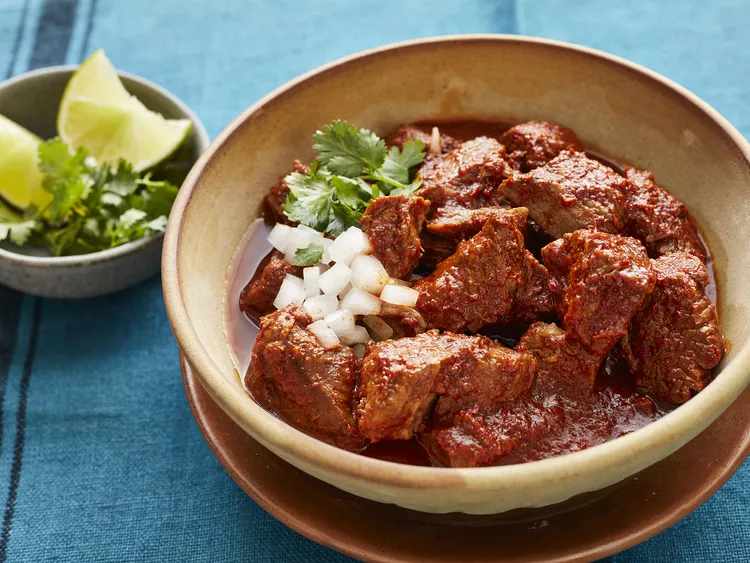

Birria

A Mexican Take On Beef Stew With Blended Chile Peppers!
Ingredients
- 5 dried Anaheim chile peppers, stemmed and seeded
- 5 guajillo chile peppers, stemmed and seeded
- 1/4 onion
- 1 tbsp mixed spices, or to taste
- 1 tbsp salt, or to taste
- 3 lbs cubed beef stew meat
- 6 bay leaves
- water filled to cover all
Steps
- fill saucepan with anaheim and guajillo peppers
- cover saucepan contents with water
- bring water and contents to a boil
- once boiling, reduce heat to simmer until tender (roughly 15 mins)
- once tender, set aside to cool for 5 mins
- transfer chiles and water into blender with onion, mixed spices, and salt
- blend contents until smooth
- add stew meat into large pot
- stir in pureed chile mix with bay leaves
- cook over medium-low until meat is very tender (roughly 3-5 hrs)
Serve Your Freshly Finished Dish - Enjoy!